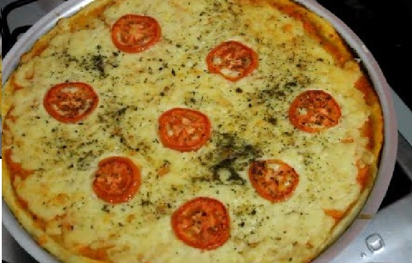
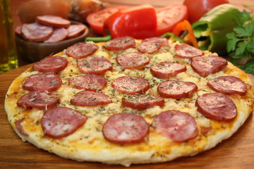
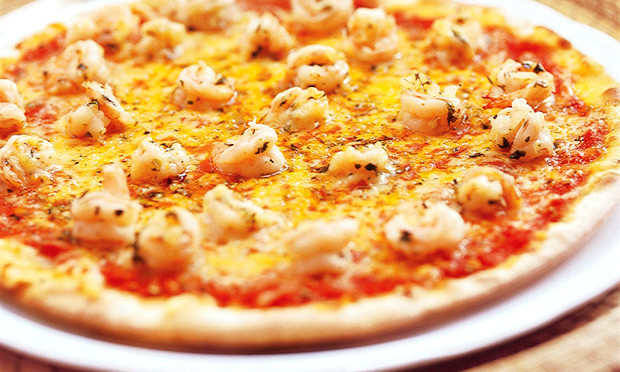

Toggle navigation
Sis Pizza
dashboard
Cardápio
Login
Sis Pizza
A melhor pizza da região!
Sabores
Mussarela

Queijo, tomate e orégano
Calabresa

Queijo, tomate, orégano e calabresa.
Camarão

Molho de tomate, queijo, camarão, tomate e manjericão.